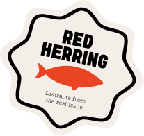
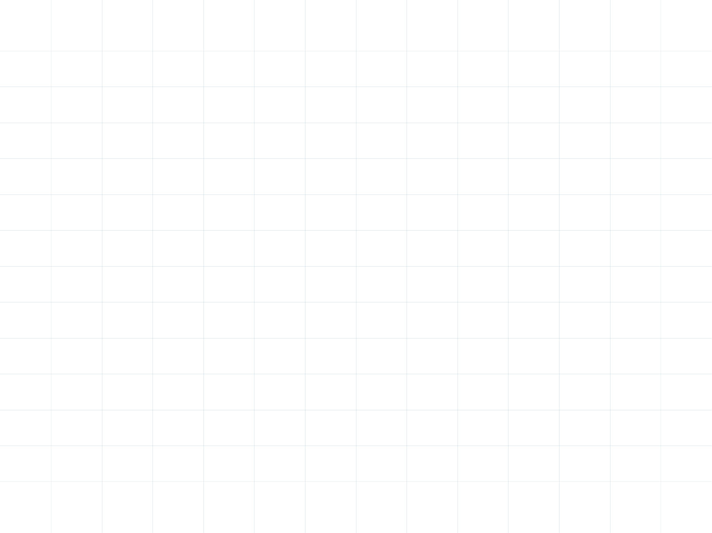
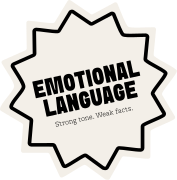
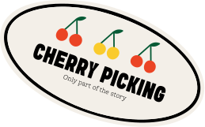
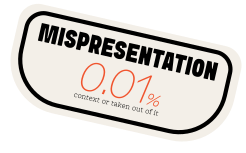
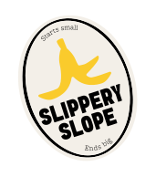

Red Herring
Pulling attention away from the real issue by introducing something that feels relevant but actually has nothing to do with the original point.

Every scroll feeds the algorithm.
Every like is a vote.
Find out what your feed says about you.
Feed

Pulling attention away from the real issue by introducing something that feels relevant but actually has nothing to do with the original point.

Words and phrases chosen to trigger strong negative feelings like fear, anger, or panic in the audience.

Selecting only the evidence that supports one side of an argument while quietly leaving out anything that tells a different story.

Taking real text, images, or video and placing them in a different situation or stripping away key background information to change what they actually mean.

Claiming that one small action will automatically trigger a chain of increasingly serious consequences, usually without any evidence to back it up.